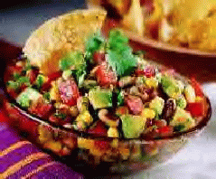

Previous Caribbean-Style Pork with Hot Frying Peppers Next Tabbouleh Up: List of Recipes


Previous Caribbean-Style Pork with
Hot Frying Peppers Next Tabbouleh
Up: List of
Recipes

Photo courtesy L. Mendel-Coy
by Leslee Mendel-Coy of Lake Forest, California, from Sunset Magazine, March 1997 issue. I find that Sunset has at least a couple of good recipes in every issue. It's refreshing to see a women's magazine (which is what Sunset is, whether they will admit it or not) that has no cosmetics ads and is not condescending. Anyhow, this recipe is utterly delicious. It can convince the most dedicated meat-and-potatoes eaters that vegetables are real food. As with the cole slaw recipe, I consider this to be a meal rather than an appetizer. Served with enough chips, it's a good dinner for two to three.
As chef for Soiree Catering in Santa Ana, California, Leslee Mendel Coy constantly invents new recipes. [She is now executive chef at Broadcom, Inc.] She first developed this double-duty dish for a cooking contest. Although it didn't capture first prize, it's a hit with her clients. Start with a spicy base of black-eyed peas, tomatoes, corn and avocado. Scoop it up with tortilla chips as an appetizer, or add cabbage and it becomes a coleslaw.
Prep and cook time: About 30 minutes
Makes: 10 to 12 appetizers or 6 salad servings
2 tablespoons (30 mL) red wine vinegar
1 1/2 to 2 teaspoons (7.5 to 10 mL) hot sauce
1 1/2 teaspoons (7.5 mL) salad oil [I use olive]
1 clove garlic, minced
1/8 teaspoon (1 mL) pepper [sheesh, grind pepper on it until
it tastes good]
1 firm-ripe avocado
1 can (15 oz. or 1/2 kg) black-eyed peas
1 can (11 oz. or 300 g) corn kernels
2/3 cup (160 mL) thinly sliced green cilantro
1/2 pound (220 g) Roma tomatoes, coarsely chopped [also good
with tomatillos]
salt
[typically I also add a can of pitted black olives and a
tablespoon of cumin]
1 bag (6 oz. or 170 g) tortilla chips [I buy a lot more] or 2
cups (480 mL) thinly sliced cabbage